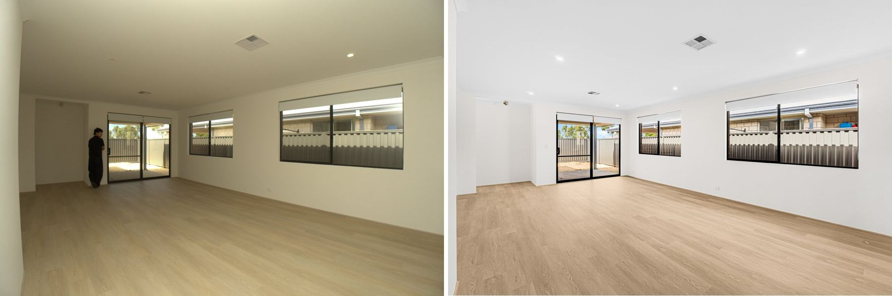
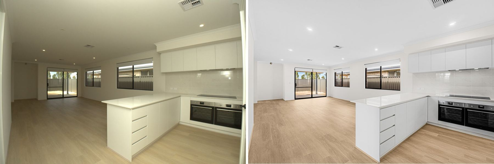
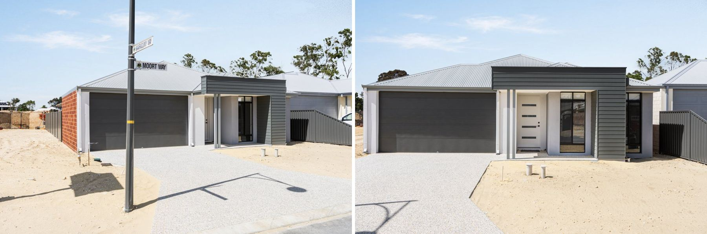
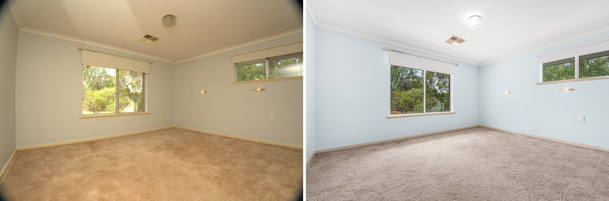
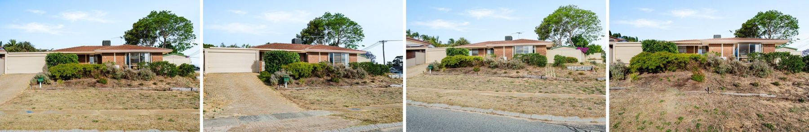
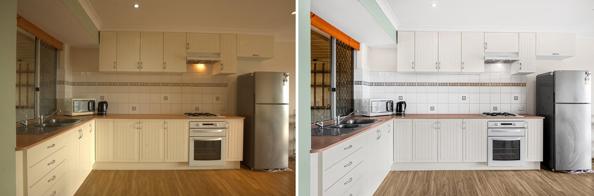
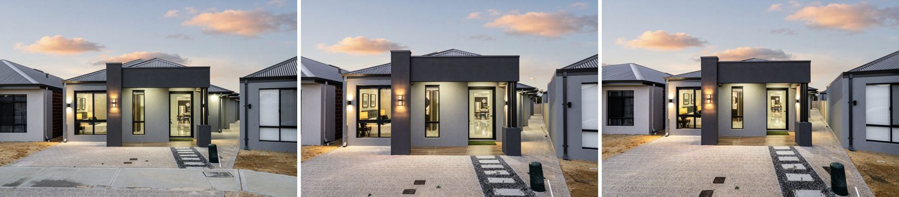
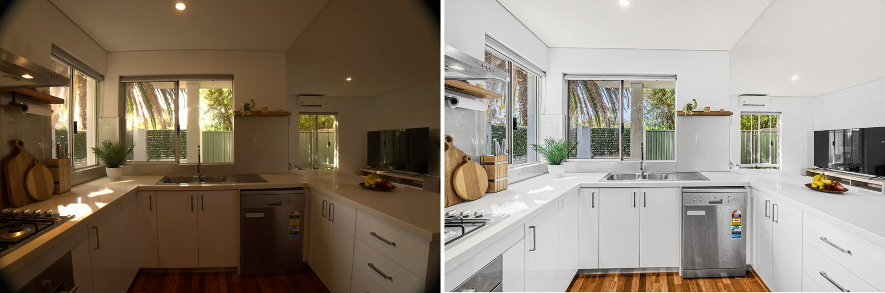

5 job(s) · 8 item(s) · Baker Production QC
Person standing in the living-room flash frame
In the DSC07867 group someone is standing by the sliding door in the flash frame (DSC07872). The editor painted them out this time, but it costs time and can leave marks. Clear the room before every bracket and flash.

Flash a little dark in most rooms
Flash frames in the kitchen, living, bedroom and kitchen close-up sit 2.5-3 stops under clipping (target about 1 stop). Turn the flash up or bounce closer so whites land near the top of the histogram.

Street-sign pole splits the front
DSC07982 has the Moort Way sign pole running through the middle of the house. Step left or right so the pole sits at the edge, as in DSC07987.

Flash under-powered in three rooms
Flash frames in the main bedroom (DSC04653), kitchen (DSC04689) and family room (DSC04716) are 2.6-3.2 stops under clipping; target about 1 stop. Raws also show heavy corner vignetting - check the lens profile/zoom setting.

Too many near-identical front angles
Seven fronts (DSC04940-04970) are small shifts of the same view of a dry front yard. Pick 2-3 strong angles and spend the time on interior detail shots instead.

Most rooms have no flash frame
Only 2 of 7 key rooms (laundry DSC04831, kitchen-dining DSC04869) have a flash shot; the rest are 5-frame ambient brackets only. Add the flash frame in every room so the editor has clean colour.

Three near-identical twilight fronts
DSC07018, DSC0702 and DSC07028 are almost the same straight-on twilight front. One straight-on plus one corner angle is enough. (No flash frames this job - fine for the display-home look, but add them where colour is mixed.)

No flash frames in any room
Every room is a 5-frame ambient bracket with no flash. The edit still came out clean and true to life, but a flash frame per room gives the editor neutral whites under mixed light.
